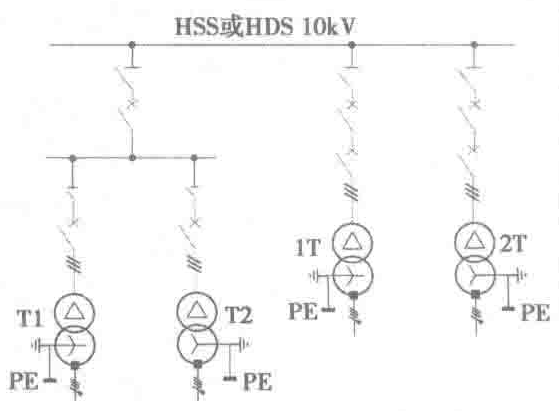
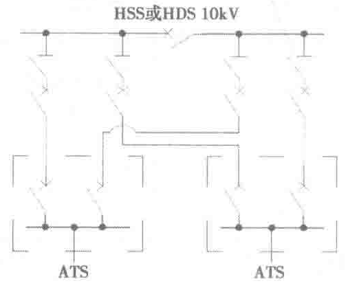
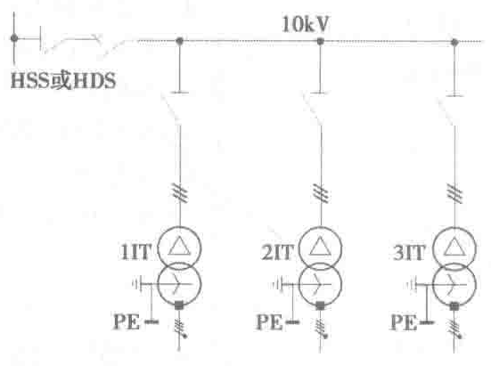
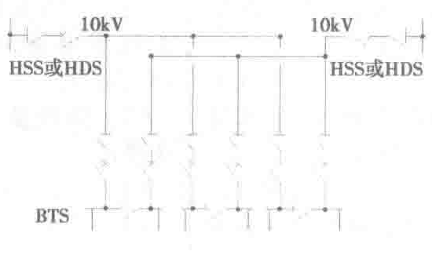

2.2.4 中压变配电系统配电网接线
中压配电网是指从总降压变电站至各功能变电所和中压用电设备端的中压电力电路，起着输送与分配电能的作用。常用的配电网接线形式如表2-9所示。
| 形 式 | 接线示意图 | 应 用 | 特 点 |
|---|---|---|---|
| 放射式 单回路 |  | 一般供二、三级负荷或专用设备，供二级负荷时宜有备用电源 | （1）放射式接线的特点是配电母线上每路或两路馈电出线仅给一个负荷点单独供电。 （2）放射式线路故障影响范围小，因而可靠性较高，而且易于控制和实现自动化，适于对重要负荷的供电 |
| 放射式 双回路 |  | 可供二级负荷，若双回路来自两个独立电源，还可供一级负荷 | |
| 树干式 单回路 |  | 只可供三级负荷 | （1）树干式接线的特点是配电母线上每路馈电出线给同一方向的多个负荷点供电。 （2）线路及其开关电器数量少，投资省，但可靠性不高，不便实现自动化。 （3）为减少干线故障时的停电范围，每回线路连接的负荷点数不宜超过5个，总容量不超过3000kV·A |
| 树干式 双回路 |  | 可供二级荷 | （1）树干式接线的特点是配电母线上每路馈电出线给同一方向的多个负荷点供电。 （2）线路及其开关电器数量少，投资省，但可靠性不高，不便实现自动化。 （3）为减少干线故障时的停电范围，每回线路连接的负荷点数不宜超过5个，总容量不超过3000kV·A |